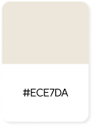
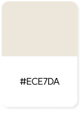

Web Publishing
M.FUNCH'
m.funch는 GASP를 활용하여 다양한 스크롤 이벤트를 포함한 반응형 웹 사이트입니다
#반응형 #HTML5 #CSS3 #JavaScript #GSAP #미디어쿼리 #SVG
Team Projact | 2023.10.24 ~2023.11.13

Overview
수업에서 학습한 퍼블리싱 기술을 응용해 고난도 반응형 웹 사이트를 구현하여 실력을 향상 하고자 했고, 팀원들과 힘을 합쳐 JavaScript 라이브러리인 GSAP를 공부하여 스크롤 이벤트 적용에 도전해 보았습니다.
My Part
- GitHub 관리
- Main / 일부
- Sub / Contact
- 발표 PPT 제작
Time Line
- 레퍼런스 사이트의 요구 사항을 분석하고 개발할 디렉토리 구조 분석
- 코드의 가독성과 일관성을 유지하기 위해 퍼블리싱 가이드라인 정의
- 서브페이지 개별 작업 후 피드백 주고 받기
- 개별적으로 맡은 메인페이지의 파트 작업 후 통합하여 완성 단계로 감
- 완성된 메인페이지에 서브페이지 연결하여 m.funch 사이트 완성
GSAP Study
- ScrollTrigger / ScrollSmoother / MotionPath 공부
- 필요한 플러그인을 하나씩 맡아서 각자 공부한 후 서로 알려주는 방식으로 기술 습득
- 학습 방법은 예제를 참고해 직접 만들어보면서 해당 플러그인 원리를 이해
- MotionPath의 경우 다른 플러그인에 비해 정보가 많이 없어 적용하는 데 어려웠고, 결국 습득하지 못함
Style Guide
-
Keyword
#세련된 #강렬한 #신비로운 #우주 #우주인 #궤도 #행성
-
Color Palette
한가지의 강렬한 포인트 컬러로 단순하면서도 눈에 띄는 강렬한 인상을 줍니다
 

-
Fonts
본문 | Pretendard / 프리텐다드
font-family: "Pretendard Variable"
-
Fonts Style
-
'm.funch' 제목
2.1rem 700
-
'm.funch' 본문
1.25rem 400
-
Problem Solving
-
Failure :(
-
기존 사이트에서 가져온 svg에 GSAP MotionPath을 적용되지 않는 상황 발생
-> 서브페이지 타이틀 모션은 이미지로, 메인 about 파트는 제작한 영상으로 대체
-
기존 사이트에서 가져온 svg에 GSAP MotionPath을 적용되지 않는 상황 발생
-
Success :)
-
서브페이지 설계 중 사전에 맞춘 디렉토리 구조에 맞게 경로 작성 했으나 이미지가 누락되는 상황 발생 -> 경로가 멀어서 로딩이 오래 걸려, 각 서브 폴더 안에 이미지 폴더를 추가해서 경로를 줄임!
-
메인페이지의 파트를 나눠 각자 작업한 다음 병합 했더니 레이아웃이 무너지고, 동작들이
구현되지 않는 상황 발생-> CSS에서 준 속성들에서 충돌이 일어나면서 JavaScript까지 영향을 주어 개인 작업을 토대로, 한 사람이 HTML, CSS를 다시 설계한 다음 필요한 JavaScript를 넣음!
-
메인 인트로 부분에 sticky 속성을 이용해서 아래 콘텐츠가 인트로 위로 겹치면서 올라오는
효과를 주려 했으나 실패
-> sticky 대신 JavaScript 스크롤 이벤트 효과와 transition 값을 줘서 해결!
-
메인 Contact 부분에서 ʻ브로슈어 신청하기’을 누르면 모달창이 열림과 동시에 페이지 최상단으로 이동하는 오류 발생
-> JavaScript에서 <a>태그 기본 성격을 지우지 않아서 발생해 .preventDefault로 제거하여 해결!
-
서브페이지 설계 중 사전에 맞춘 디렉토리 구조에 맞게 경로 작성 했으나 이미지가 누락되는 상황 발생
Review
-
Bad
- MotionPath를 이용해 넣고자 했던 효과를 구현하지 못한 아쉬움. 창의적인 방법으로 영상을 제작해 넣기는 했지만 MotionPath를 성공했다면 성취감이 매우 높았을 것 같음
- 메인 about 파트에서 기존 사이트에서는 스크롤 브레이크가 걸리는 효과가 있으나 이번 프로젝트에서는 시간 관계상 구현하지 못한 것이 아쉬움
- 가이드라인을 정한다고 정했지만 각자 해오던 작업 스타일이 익숙하다보니 지켜지지 않는 부분이 많았음. 그래서 메인페이지 병합을 맡아서 하는 데 코드를 알아보기 어려워 시간이 오래걸렸던 기억이 남
-
Good
- 걱정이 많았던 GSAP 플러그인을 적절하게 이용해 효과를 준 것 같음
- 디자인이나 레이아웃의 부분에서 심미적으로 보기 좋게 잘 만들어진 것 같음
- Contact 페이지에서 어려워 보였던 JS를 기존 페이지와 동일하게 구현한 점
- 소통이 잘 된 편으로 각자 작업 후 꼭 피드백을 주고 받았고 어려운 문제가 있으면 함께 고민해서 해결함
-
Takeaway
- 팀원들이 적극적으로 소통하면서 팀프로젝트의 순기능을 몸소 확인할 수 있는 계기가 되었음
- 칭찬과 격려를 아끼지 않았던 태도들이 팀프로젝트에 대한 부정적인 생각을 긍정적으로 전환하는 데 큰 도움이 됨